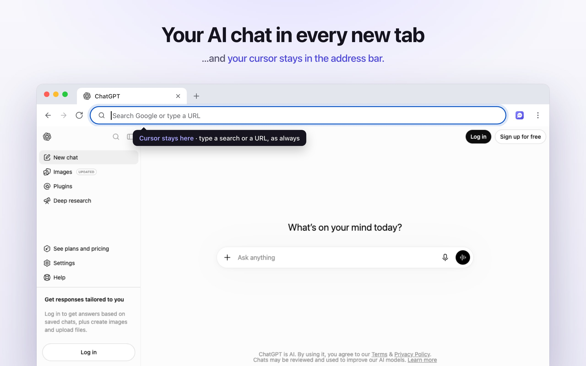
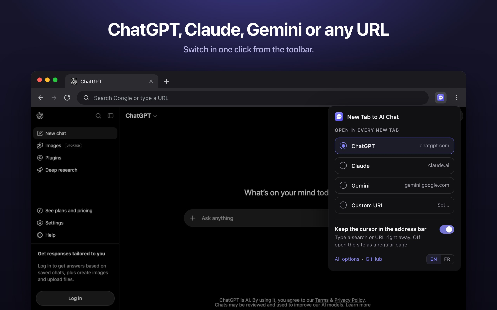
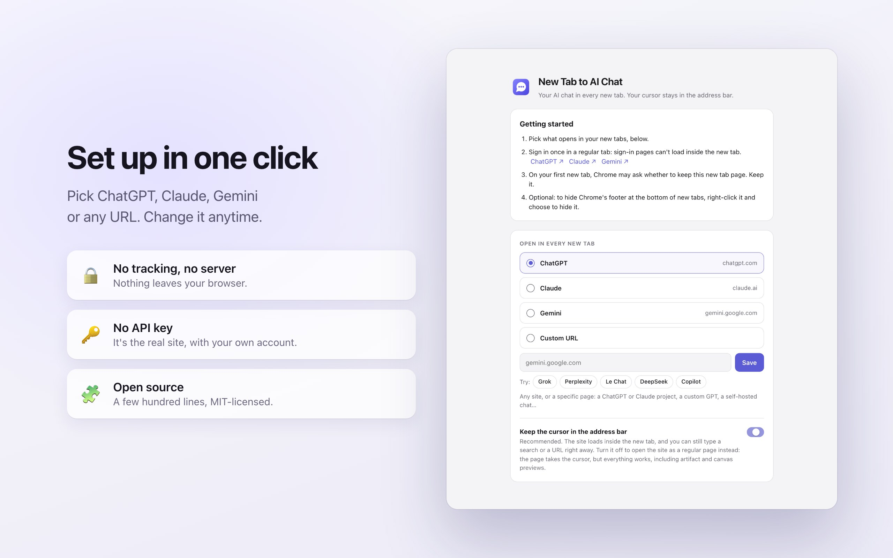

What it does
New Tab to AI Chat is a Chrome extension that replaces the new tab page with the AI assistant you use every day: Claude, ChatGPT, Gemini or any website you choose. Press ⌘T (Mac) or CtrlT (Windows, Linux, ChromeOS) and your chat is there, signed in, ready for a question.
Unlike other "new tab" extensions, it keeps the keyboard cursor in the address bar. If you wanted a Google search or a website instead, just type as usual: nothing changes about how you browse, you simply gain a chat window in every new tab.
⌨️ Cursor stays in the address bar
Search Google or type a URL the moment the tab opens, like Chrome's default new tab.
💬 Your real chat
The actual claude.ai, chatgpt.com or gemini.google.com, with your account, history, sidebar, projects, voice mode and file uploads. No API key.
⚡ Fast
A few kilobytes, no framework. The site starts loading about 60 ms after the tab opens, over its own background color.
🔀 Any site, one click
Switch between Claude, ChatGPT and Gemini from the toolbar. One-click suggestions for Grok, Perplexity, Le Chat, DeepSeek and Copilot, or any URL.
🏷️ Tabs you can recognize
The tab shows your conversation's title and the site's icon, not a generic "New Tab".
🔒 Zero tracking
No account, no server, no analytics, no ads. Everything stays in your browser. Open source.

Why it's useful
The new tab is the fastest way into the browser: people open dozens every day. Making it an AI chat turns "I'll ask ChatGPT later" into a two-second habit, without giving up anything:
- Chrome no longer lets you choose a new tab URL. The setting was removed; only enterprise-managed devices can set one through a policy. An extension is the only way for everyone else.
- Redirect extensions steal the cursor. They send the tab to the site, which takes the keyboard focus: you can't just type a search anymore, you need an extra click or ⌘L every time.
- "AI new tab" dashboards aren't your real assistant. They wrap a model in their own interface, often with an API key, ads or tracking, and without your conversations, projects or settings.
- Side panels and desktop apps are one more step. They're great, but they're not where your hands already are when you open a tab.
Use cases
- Quick questions while browsing: definitions, conversions, "how do I…", without leaving your flow.
- Writing: draft an email, rephrase a paragraph, translate a message.
- Coding: paste an error, ask for a snippet, review a function.
- Research and learning: summarize, compare, explain a concept, with Perplexity or Gemini if you prefer search-first answers.
- Voice: open a tab and talk to ChatGPT, Claude or Gemini in voice mode.
- A project in every tab: point new tabs at a specific Claude Project or custom GPT that knows your work context.
- Private or self-hosted AI: Open WebUI, LibreChat or any local model interface on
http://localhost, or your company's internal chat. - Switching assistants: use Claude for writing this week, Gemini for research next week, in one click.
Who it's for
People who use an AI assistant many times a day: developers, writers, students, researchers, founders, support and sales teams. Also privacy-minded users who want a small, auditable open-source tool rather than a closed "AI new tab" product, and teams who want every new tab to open their internal AI portal.
How it compares
| New Tab to AI Chat | Chrome's default new tab | Redirect extensions | AI dashboard extensions | Official ChatGPT / Claude extensions | |
|---|---|---|---|---|---|
| Your AI chat in every new tab | ✅ | ❌ | ✅ | ✅ (their UI) | ❌ (side panel) |
| Cursor stays in the address bar | ✅ | ✅ | ❌ | Varies | n/a |
| Real site, your account and history | ✅ | n/a | ✅ | Often ❌ (API key) | ✅ |
| Claude, ChatGPT, Gemini or any URL | ✅ | ❌ | ✅ | Varies | ❌ (one each) |
| Open source, no tracking | ✅ | n/a | Varies | Rarely | ❌ (closed source) |

Supported AI sites
- Built in: Claude (claude.ai), ChatGPT (chatgpt.com), Gemini (gemini.google.com).
- One-click suggestions: Grok (grok.com), Perplexity (perplexity.ai), Le Chat by Mistral (chat.mistral.ai), DeepSeek (chat.deepseek.com), Microsoft Copilot (copilot.microsoft.com).
- Any URL: a specific page (a Claude Project, a custom GPT), another assistant, or a self-hosted chat on your machine or network.
Tested: Claude, ChatGPT and Gemini load inside the new tab, and Grok too (tested signed out). Sites protected by aggressive anti-bot checks can't be verified by automated tests; they load in a regular browser session. A few sites refuse to run inside a frame: for those, turn off "Keep the cursor in the address bar" and the site opens as a regular page.
Browser compatibility
- Google Chrome 145 or later on Windows, macOS, Linux and ChromeOS: supported and tested, including an automated end-to-end test suite that runs in Chromium.
- Comet (Perplexity's Chromium browser, version 145): tested with the same automated suite. Everything passes, except that the welcome page doesn't open by itself at install; the settings stay one click away on the toolbar icon.
- Microsoft Edge, Brave, Vivaldi, Opera and other Chromium-based browsers: same engine and the same extension APIs, so the extension is expected to work from version 145, but it hasn't been tested on each of them yet. In Edge, install it from the Chrome Web Store after turning on Allow extensions from other stores, or load it unpacked.
- Not supported: Firefox and Safari (different extension systems), mobile browsers (Chrome on Android and iOS doesn't run extensions), Arc (it opens a command bar instead of a new tab page), and incognito windows (Chrome keeps its own new tab page there).
Customization
- Choose Claude, ChatGPT, Gemini or a custom URL from the toolbar icon or the options page.
- Keep the cursor in the address bar (on by default) shows the site inside the new tab. Turn it off to open the site as a regular page instead: the page takes the cursor, but every feature works, including Claude artifact previews and ChatGPT canvas previews.
- Interface in English (default) or French.
- Everything else is code you can change: the extension is a few hundred lines of plain JavaScript, MIT-licensed, with a guide for AI coding agents (AGENTS.md). Fork it, add a provider, change the default.
How it works
- The extension overrides Chrome's new tab page (Manifest V3,
chrome_url_overrides). Chrome focuses the address bar on new tabs, and because the tab never navigates away, nothing takes that focus back. - The page reads your choice synchronously from a local cache and immediately loads the chosen site in a full-page frame: no network call and no waiting before the site starts loading.
- Chat sites normally refuse to be shown inside another page (X-Frame-Options, CSP frame-ancestors). A
declarativeNetRequestrule removes those two headers only for the site's frame in a tab whose top-level page is the extension's own new tab. In regular tabs, and when any other website tries to embed these sites, their protection stays intact. - Inside that frame, Chrome hides the site's own preference cookies from its JavaScript. For Claude and ChatGPT, the extension makes those readable (cookie consent, sidebar state, signed-in hints), without ever touching session cookies.
- A small script sends the page title, icon and background color up to the tab, so tabs show your conversation names and the next new tab paints the right color before the site loads.
Privacy and security
No analytics, no tracking, no ads, no remote code, no server: nothing is sent to the developer or to anyone else. Settings are saved in Chrome's storage and synced by Chrome between your own devices. Permissions are limited to claude.ai, chatgpt.com and gemini.google.com, plus the one custom site you pick, if any. Read the full privacy policy, or the source code on GitHub.
Install
- Chrome Web Store: the listing is in review; the link will appear here.
- Manually, in two minutes: download the zip from the latest release and unzip it. Open
chrome://extensions(oredge://extensions), turn on Developer mode, click Load unpacked and select the folder. Pick your assistant on the welcome page. - With an AI coding agent: ask Claude Code, Codex or Cursor to "install the Chrome extension from https://github.com/BlaisedEstais/new-tab-to-ai-chat: clone it, read AGENTS.md, then walk me through loading its extension folder".
Sign in once to your AI site in a regular tab: sign-in pages can't load inside another page, and the new tab then uses the same session.
Frequently asked questions
Is it free?
Yes, free and open source (MIT). No account, no subscription, no ads. You use each AI site with your own account, on a free or paid plan.
Which AI assistants does it support?
Claude, ChatGPT and Gemini are built in. Grok, Perplexity, Le Chat, DeepSeek and Copilot are one-click suggestions. Any other website works as a custom URL.
Can I still search Google from the new tab?
Yes. The cursor stays in the address bar, so you type a search or a URL exactly as before. Your default search engine isn't changed.
Does it work in Microsoft Edge, Brave, Opera or Vivaldi?
It's built and tested for Google Chrome 145+, and its automated tests also pass in Comet, another Chromium browser. Edge, Brave, Opera and Vivaldi use the same Chromium engine and extension APIs, so it's expected to work there from version 145, though it hasn't been tested on each yet. In Edge, allow extensions from other stores to install it from the Chrome Web Store.
Does it work with Grok?
Yes, Grok is one of the one-click suggestions and loads inside the new tab. Like every custom site, it asks Chrome for access to grok.com the first time.
Can I use a specific Claude Project or custom GPT?
Yes: paste its URL as the custom URL. The same works for a temporary or specific chat page, or a self-hosted chat such as Open WebUI.
Does it read my conversations?
No. It only reads the page title, icon and background color of the chat site, on your device, to label the tab. There's no server to send anything to.
Does it change my cookies?
For Claude and ChatGPT only, it changes one attribute (SameSite) of the preference cookies their own JavaScript reads, so that consent choices and the sidebar state work inside the new tab. It never reads cookie values for itself and never touches session cookies.
Is removing security headers safe?
The headers are removed only for the chosen site's frame inside the extension's own new tab, a page no website can load. Any other page trying to embed these sites is still blocked, and regular tabs are untouched. Automated tests check both.
Why do I have to sign in in a regular tab?
Sign-in pages (OpenAI, Anthropic, Google) refuse to be displayed inside another page, a sound security choice. Sign in once in a regular tab; the new tab then uses the same session.
Why are Claude artifacts or ChatGPT canvas previews blank?
They run in the sites' own sandboxed frames, which only allow the sites themselves as parents. Open the chat in a regular tab (Cmd/Ctrl-click it in the sidebar), or turn off "Keep the cursor in the address bar".
Does it slow Chrome down?
No. It weighs a few kilobytes, runs nothing in the background, and the site starts loading about 60 ms after the tab opens.
Does it work in incognito, on mobile, in Firefox or Safari?
No. Chrome keeps its own new tab page in incognito windows, mobile browsers don't run extensions, and Firefox and Safari use different extension systems.
How do I get Chrome's normal new tab back?
Disable or remove the extension in chrome://extensions. Nothing else in Chrome is changed.
Can I hide the footer Chrome adds at the bottom?
Yes. Chrome adds a small footer to new tab pages provided by extensions; right-click it and choose to hide it.
Is it affiliated with OpenAI, Anthropic or Google?
No. It's an independent open-source project.
Can I contribute or change it?
Yes. Issues and pull requests are welcome on GitHub, and you can fork it freely. AGENTS.md explains the code to AI coding agents.